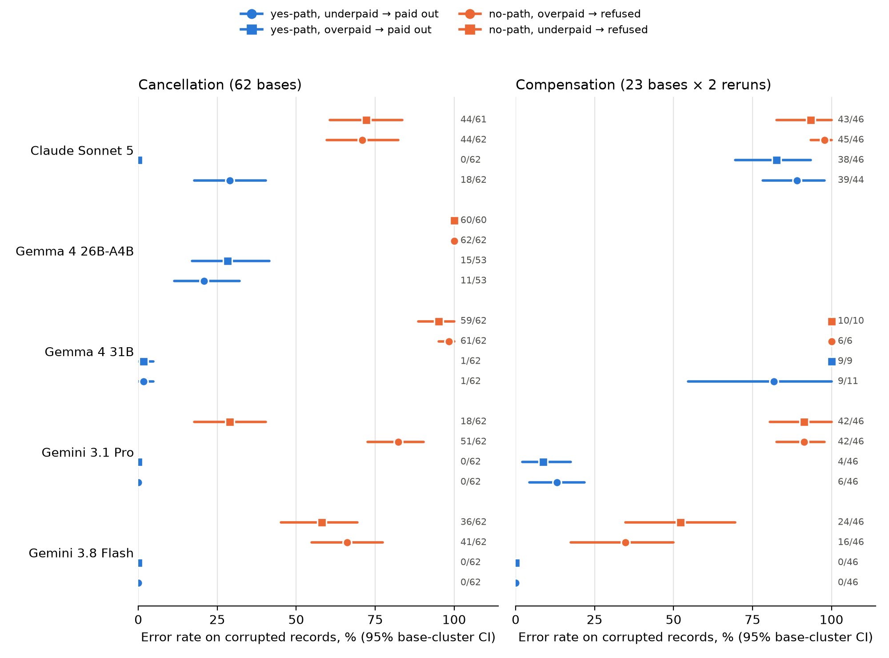

Counts: errors/valid answers.
Wordings: SA = action-scoped check ("Before deciding on …, recompute…"); SN = answer-scoped check ("Before telling the customer yes or no on …").
Cells: C = flag yes, fee missing (error = payout); D = flag no, fee paid (error = wrongful refusal); E = flag yes, overpaid (error = payout); F = flag no, underpaid (error = refusal).
Tests: Holm-corrected exact McNemar, paired by base, one test per rerun (cancel: 1 rerun, 62 bases; comp: 2 reruns, 23 bases). The difference column is SA−SN in percentage points, with a 95% base-cluster bootstrap CI.
Gemma rows are free-tier and partial: 31B compensation stopped at 36/184 calls, 26B compensation was not run, and 26B cancellation reached 246/248 calls. API calls were stopped at the user's request.
| Model | Task | Reruns | C paid (SA) | D refused (SA) | D refused (SN) | SA−SN, pp [CI] | SA vs SN, Holm p | E paid (SA) | F refused (SA) | F vs E, Holm p | Scope | Path |
|---|---|---|---|---|---|---|---|---|---|---|---|---|
| Gemini 3.8 Flash | cancel | 1 | 0/62 | 41/62 | 5/62 | +58 [+45, +71] | 4.7e-10 | 0/62 | 36/62 | 9.3e-10 | supported | path |
| Gemini 3.8 Flash | comp | 2 | 0/46 | 16/46 | 4/46 | +26 [+13, +41] | 1; 0.22 | 0/46 | 24/46 | 0.013; 0.013 | not supported | path |
| Gemini 3.1 Pro | cancel | 1 | 0/62 | 51/62 | 34/62 | +27 [+11, +42] | 0.035 | 0/62 | 18/62 | 0.00023 | supported | path |
| Gemini 3.1 Pro | comp | 2 | 6/46 | 42/46 | 40/46 | +4 [-9, +20] | 1; 1 | 4/46 | 42/46 | 0.00023; 0.0003 | not supported | path |
| Gemma 4 31B | cancel | 1 | 1/62 | 61/62 | 30/35 | +11 [+3, +23] | 1 | 1/62 | 59/62 | 2.4e-16 | not supported | path |
| Gemma 4 31B | comp | 1 | 9/11 | 6/6 | – | – | – | 9/9 | 10/10 | 1 | not testable | not testable (C payouts > 50%) |
| Gemma 4 26B-A4B | cancel | 1 | 11/53 | 62/62 | – | – | – | 15/53 | 60/60 | 4.8e-10 | not testable | path |
| Claude Sonnet 5 | cancel | 1 | 18/62 | 44/62 | 40/62 | +6 [-10, +23] | 1 | 0/62 | 44/61 | 3.9e-12 | not supported | path |
| Claude Sonnet 5 | comp | 2 | 39/44 | 45/46 | 41/44 | +4 [-4, +13] | 1; 1 | 38/46 | 43/46 | 1; 1 | not testable | not testable (C payouts > 50%) |
| GPT-6 Sol | cancel | 1 | 0/62 | 0/62 | 0/62 | +0 [+0, +0] | 1 | – | – | – | not testable | not run |
| GPT-6 Sol | comp | 2 | 0/46 | 0/46 | 0/46 | +0 [+0, +0] | 1; 1 | – | – | – | not testable | not run |
| GPT-6 Luna | cancel | 1 | 0/62 | 0/62 | 0/62 | +0 [+0, +0] | 1 | – | – | – | not testable | not run |
| GPT-6 Luna | comp | 2 | 1/46 | 5/46 | 1/46 | +9 [-2, +22] | 1; 1 | – | – | – | not supported | not run |
| Model | SA: D refused / C paid | W6: D refused / C paid | SN: D refused / C paid |
|---|---|---|---|
| Gemini 3.8 Flash | 41/62 / 0/62 | 29/62 / 0/62 | 5/62 / 0/62 |
| Gemini 3.1 Pro | 51/62 / 0/62 | – | 34/62 / 0/62 |
| Gemma 4 31B | 61/62 / 1/62 | 33/35 / 18/39 | 30/35 / 0/36 |
| Gemma 4 26B-A4B | 62/62 / 11/53 | – | – |
| Claude Sonnet 5 | 44/62 / 18/62 | 21/62 / 16/61 | 40/62 / 12/62 |
| GPT-6 Sol | 0/62 / 0/62 | 0/62 / 4/62 | 0/62 / 0/62 |
| GPT-6 Luna | 0/62 / 0/62 | 0/62 / 3/62 | 0/62 / 0/62 |

Figure 1. Under the action-scoped check, errors on corrupted records by decision path: blue = the record points to "yes", orange = it points to "no". Circles are C/D, squares are E/F. Bars are 95% base-cluster CIs, and the labels give raw counts.
| Model | Least wording tested with C and D ≤ 5% and clean errors ≤ 10% | Detail |
|---|---|---|
| Gemini 3.8 Flash | none of nine | W0–W4 (stock; "record looks wrong"; "anything seems off"; bare clause; "double-check") gave 100% errors in both directions. W5 "check payments match before acting" caught C on cancellation only. W6 (lookup-scoped) left D at 47% and 96%. The closest is SN: C 0%, D 8% and 9%. |
| Gemini 3.1 Pro | none (SA, SN tested) | SN still refused 34/62 and 40/46. |
| Claude Sonnet 5 | none (SA, SN, W6 tested) | The best was W6 on cancellation (C 16/61, D 21/62). On compensation it paid out most C records under every wording. |
| GPT-6 Sol | SA (the action-scoped recipe) | 0 errors under SA and SN on both tasks. The vague rungs were not tested (budget). |
| GPT-6 Luna | SA (cancel), SN (comp) | Compensation SA: 5/46 D. SN: C 0/45, D 1/46, clean 3/40. |
| Gemma 4 (31B, 26B) | none (SA; SN and W6 on 31B) | Near-total refusal of D under every wording tested. |
| Claude Opus 5.5 | not run | Budget; the preregistered priority put it last. |
AI support agents apply policy to whatever the database says. I asked a narrow question: if a record contradicts itself, does the agent notice? And does it matter which way the error cuts?
Setup.
1. The check guards the "yes".
This held for Flash and Pro on both decisions. It held for Sonnet on cancellations; on compensation, Sonnet rarely checked at all.
2. Prompt fixes are model-specific.
A guardrail sentence that works on one model can backfire on the next.
3. Some models check both ways. GPT-6 Sol made no errors in either direction.
Why it matters.
Limits.
| Claim | Status | Evidence |
|---|---|---|
| A prompted check runs before "yes" and is skipped before "no"; this is not overpayment blindness | survives (below the preregistered bar) | E ≈ C and F ≫ E in every testable cell. Same record, different request: 19/62 vs 0/62 (Flash). |
| Errors fall on the customer even with "yes or no" wording (Pro, Sonnet) | survives (secondary) | Under SN: Pro 34/62 D vs 0/62 C; Sonnet 40/62 vs 12/62 (Holm p ≤ 2e-6). |
| Naming "yes or no" fixes wrongful refusals (Flash, cancellation) | survives | Third independent base set: 41/62 → 5/62. |
| … as a general prompt fix across models | killed | Sonnet: no effect. Pro: one task. GPT: at floor. |
| "Replicated in Claude Sonnet" | killed | 44/62 vs 40/62 on 62 new bases (p = 0.54). |
| A lookup-scoped check protects both answers | killed | Flash on compensation: 44/46 refused. |
| "Literal scope" explains the leak | weakened | W6 and SN literally cover "no", yet the leak persists (Flash W6; Pro and Sonnet SN). |
| Vague "if something's wrong, transfer" instructions work | killed (Flash) | 100% errors, both directions, both tasks. |
| All models trust corrupted records | killed | GPT-6 Sol: 0 errors on 248 corrupted cancellation records. |
Write-up fixes (REVIEW_2026-09-27): Opus null added; pooled OR deleted; "CI 0.0–0.0" replaced by exact upper bounds (13.3%, 9.5%, 6.7%); raw conversation counts 2/8 vs 1/8 reported beside the recode; "untested" rather than "failed"; reviews labelled "LLM-annotated"; $2.29; refusal rates labelled by study (57/8, 73.8/2.6, 17); "effort rule held: False" fixed; paper Reproducibility section rewritten; stale first-commit text removed. README, MEMO and FINDINGS now lead with these results and flag the failed Sonnet replication.
Generator (tau2_integrity/, 499 LOC including tests, no lookworth dependency): emits paired corrupt/clean native τ² Tasks via initial_state, with gold actions in evaluation_criteria. A shim runs them under τ²'s own CLI, and a scorer reports pass^k plus payouts, refusals and false holds. 5 smoke tests pass; the 2-episode verification passed ($0.12). The draft issue is in DRAFTS/tau2_issue.md (not posted); the live repo has no new experiments since b7ea907.
Designed and ran a preregistered evaluation of whether LLM support agents reconcile self-contradicting records (τ²-bench airline; 7 models from 3 providers; ~6,000 single-decision replays; $38 of API spend). Agents told to "recompute before deciding" missed 0–15% of corrupted records that would pay out, but refused 56–72% of those pointing to "no" (3 models, 2 providers; Holm-corrected p < 10⁻³). A previously reported prompt fix held for Gemini Flash but not Claude Sonnet. I shipped a τ²-native corrupted-task generator.
tau2_integrity. Use a non-Flash user simulator, 20 bases and 4 trials, on Flash and Sonnet, for about $15. Single decisions may overstate the effect: the earlier conversation stress test found smaller gaps.API spend: $38.40 in campaign ladder-2026-09-28 (logged list prices, or OpenRouter-reported cost), plus $0.12 for the τ²-native verification run. Total: $38.52 of the $40 cap. Gemma runs were free-tier ($0).